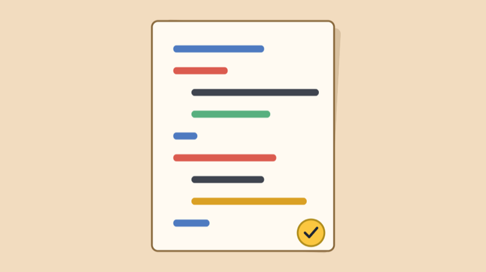

Everything we’ve used so far with the Arduino Nano 33 IoT, on one page. Each section links back to the lesson where we first used it. Keep this open while you build your midterm.
Every sketch has two parts:
void setup() {
// runs once, when the board starts: set up pins and Serial here
}
void loop() {
// runs over and over, forever
};{ } group lines together. Every
{ needs a matching }.Serial works, serial doesn’t.
digitalWrite, not digitalwrite.// a comment is ignored by the Arduino: it’s a
note for people. /* ... */ comments out several
lines.Lessons: Getting Set Up, Blink
A variable is a name that holds a value.
| Type | Holds | Example |
|---|---|---|
int |
whole numbers | int brightness = 0; |
float |
numbers with a decimal point | float seconds = 0.6; |
unsigned long |
very big whole numbers, never negative (for
millis()) |
unsigned long lastHit = 0; |
const int |
a number that never changes, like a pin | const int buttonPin = 2; |
= stores a value:
brightness = 255;== compares two values:
if (brightness == 255)count = count + 1;| Function | What it does | Values |
|---|---|---|
pinMode(pin, OUTPUT); |
makes a pin an output (in setup()) |
OUTPUT or INPUT |
digitalWrite(pin, HIGH); |
turns a pin on (3.3V) or off (0V) | HIGH or LOW |
digitalRead(pin) |
reads a pin: is it on or off? | HIGH or LOW |
analogRead(A0) |
reads a voltage on an analog pin (A0–A7) | 0 (0V) to 1023 (3.3V) |
analogWrite(pin, 127); |
dims an output with PWM | 0 (off) to 255 (full) |
analogWrite() only works on the PWM
pins: 2, 3, 5, 6, 9, 10, 11, 12, A2, A3,
A5.LED_BUILTIN is the small LED on the board
itself.Lessons: Blink, Fade and Intro to PWM, Button
if (sensorValue > 500) {
// runs when the condition is true
} else if (sensorValue > 100) {
// runs when the first one is false, and this one is true
} else {
// runs when none of the above are true
}| Compare | Means |
|---|---|
a == b |
equal to |
a != b |
not equal to |
a > b, a < b |
greater than, less than |
a >= b, a <= b |
greater than or equal to, less than or equal to |
Combine conditions with
&& (both must be true) or
|| (at least one must be
true):
if (brightness <= 0 || brightness >= 255) {
fadeAmount = -fadeAmount; // turn around at either end
}Lesson: Button
| Function | What it does |
|---|---|
delay(1000); |
waits, in milliseconds (1000 ms = 1 second). Nothing else happens while it waits. |
millis() |
the number of milliseconds since the board started. Store it
in an unsigned long. |
Doing something every so often, without
delay(), so the sketch keeps reading
sensors in between:
unsigned long lastTime = 0;
void loop() {
if (millis() - lastTime > 500) { // has it been half a second?
lastTime = millis();
// do something
}
}Workshops: Doorstop Spring Switch, Bouncing Ball Sensor
| Function | What it does |
|---|---|
Serial.begin(9600); |
starts talking to the computer (in
setup()) |
Serial.print(value); |
prints a value, and stays on the same line |
Serial.println(value); |
prints a value, then starts a new line |
Serial.begin().Serial.print(mapped);
Serial.print(" ");
Serial.println(constrained);Lesson: Print to Serial Monitor
| Function | What it does | Example |
|---|---|---|
map(value, fromLow, fromHigh, toLow, toHigh) |
converts a number from one range to another | map(sensorValue, 0, 1023, 0, 255) |
constrain(x, low, high) |
keeps a number inside a range | constrain(brightness, 0, 255) |
random(min, max) |
a random whole number from min up to (not
including) max |
random(200, 2000) |
map() doesn’t stop at the ends of the range, so
use constrain() right after it:
int brightness = map(lightValue, darkest, brightest, 0, 255);
brightness = constrain(brightness, 0, 255);Lessons: map(), constrain()
| Function | What it does |
|---|---|
tone(pin, frequency); |
plays a note (in hertz) until noTone() |
tone(pin, frequency, duration); |
plays a note for a number of milliseconds |
noTone(pin); |
stops the sound |
The Nano 33 IoT has an accelerometer built in. Install the Arduino_LSM6DS3 library (Library Manager), then:
#include <Arduino_LSM6DS3.h>
void setup() {
Serial.begin(9600);
IMU.begin(); // start the accelerometer
}
void loop() {
float x, y, z;
if (IMU.accelerationAvailable()) { // is there a new reading?
IMU.readAcceleration(x, y, z); // fills in x, y and z
Serial.print(x);
Serial.print(" ");
Serial.print(y);
Serial.print(" ");
Serial.println(z);
}
}z is about 1 and
x and y are about 0. Tilt the board
and the 1 g moves to x or y.while (!Serial);.
Remove that line if your project runs without a computer, or it
will wait forever.Count a press only once (the moment the button goes from not pressed to pressed):
int lastState = LOW;
void loop() {
int state = digitalRead(buttonPin);
if (state == HIGH && lastState == LOW) {
// just pressed!
}
lastState = state;
}Fade up and down (the Fade sketch):
analogWrite(ledPin, brightness);
brightness = brightness + fadeAmount;
if (brightness <= 0 || brightness >= 255) {
fadeAmount = -fadeAmount;
}
delay(30);Sensor in, something out:
int reading = analogRead(A0); // 1. read
int pitch = map(reading, 100, 800, 200, 2000); // 2. convert
pitch = constrain(pitch, 200, 2000); // 3. keep it in range
tone(speakerPin, pitch); // 4. use it| Part | How to wire it |
|---|---|
| LED | pin → 220Ω resistor → LED long leg; LED short leg → GND |
| Button | 3.3V → button → pin, and 10kΩ from the pin to GND (the pull-down keeps the pin LOW when not pressed) |
| Analog sensor (photocell, Velostat) | 3.3V → sensor → A0, and 10kΩ from A0 to GND (a voltage divider) |
| Potentiometer | outer legs to 3.3V and GND, middle leg → A0 |
| RGB LED | each color leg → its own 220Ω → a PWM pin; long leg → GND (common cathode) or 3.3V (common anode) |
| Passive buzzer | pin → buzzer → GND |
| Piezo (knock sensor) | needs a 1MΩ, a 10kΩ and a 3.3V Zener: see the Bouncing Ball Sensor |
Lessons: Button, RGB LED, DIY Pressure Sensor
;, a missing
} or a typo in a name (check capital letters).Serial.begin().analogWrite() doesn’t dim: the
pin isn’t a PWM pin.delay() or wait with millis().